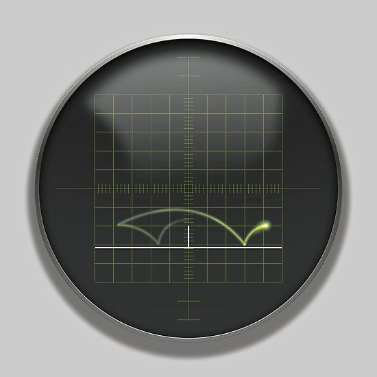
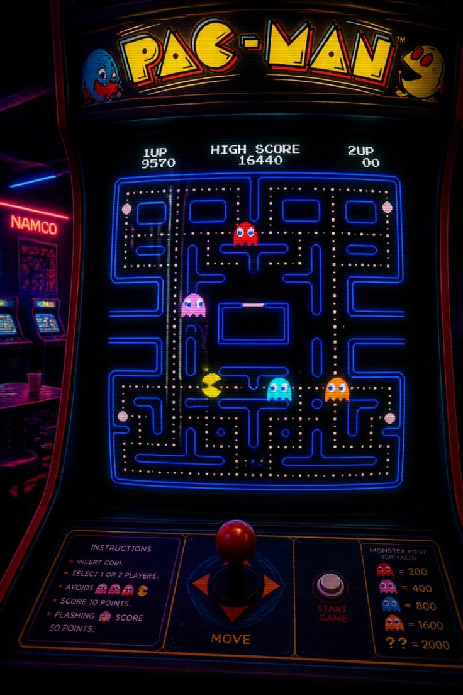
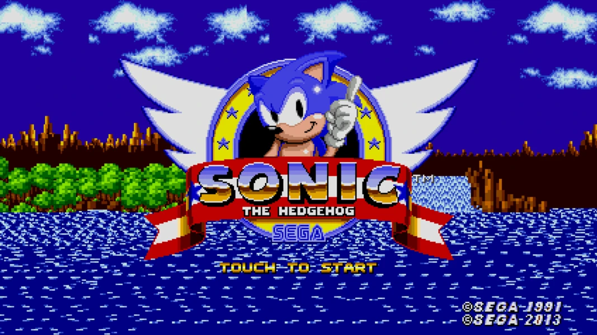
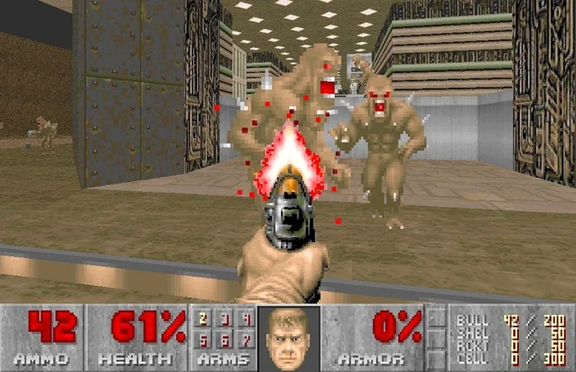
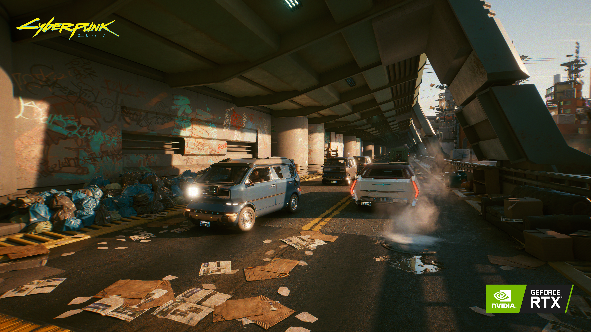

SOBRE O TEMA
Uma perspective cronológica sobre a engenharia de software e hardware voltada aos jogos eletrônicos.
Linha do Tempo Transmídia
Primeiros Experimentos
Surgimento de jogos em ambientes acadêmicos e laboratórios de pesquisa, focados em testar capacidades de computadores primitivos e mainframes corporativos.

A Era dos Arcades
Fliperamas conquistam o espaço público mundial. Engenharia comercial fortemente focada em circuitos lógicos integrados e moedas por partida.

Consoles Domésticos
A tecnologia dos microprocessadores invade as salas de estar de forma massiva. Criação de arquiteturas modulares baseadas em cartuchos de leitura física.

Ascensão dos Computadores
PCs ganham placas controladoras dedicadas. Introdução das conexões em rede local (LAN) e a expansão de dados complexos com suporte a mídias óticas.

Jogos 3D e Polígonos
Avanço absoluto na computação gráfica e processamento de malhas tridimensionais. Ambientes ganham profundidade espacial e eixos matemáticos reais.
Ambientes Conectados
A computação em nuvem distribuída, inteligência artificial integrada nativamente, motores de renderização híbridos e taxas otimizadas de quadros.

A Engrenagem por Trás da História
Evolução das Mídias
A transição crucial das memórias físicas limitadas para o armazenamento de altíssima velocidade e processamento de dados digitais imediatos.
Física e Gráficos
A substituição completa de planos bidimensionais estáticos simples por modelos geométricos avançados e sombreamento avançado dinâmico.
Engenharia de Áudio
A evolução técnica dos bipes sintetizados de frequência única para canais de reprodução orquestrados e áudio posicional 3D imersivo.